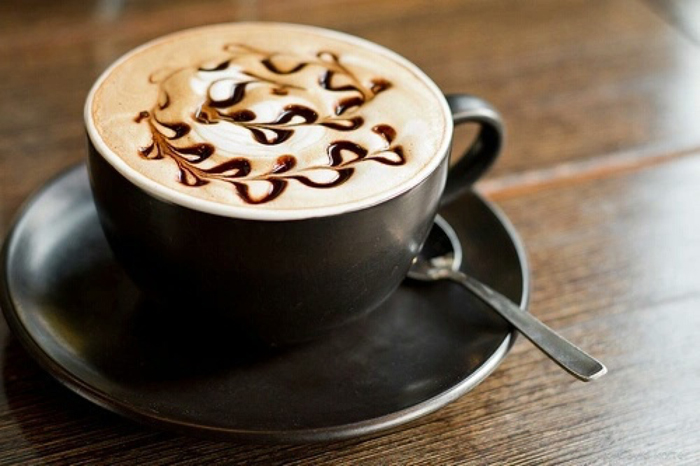
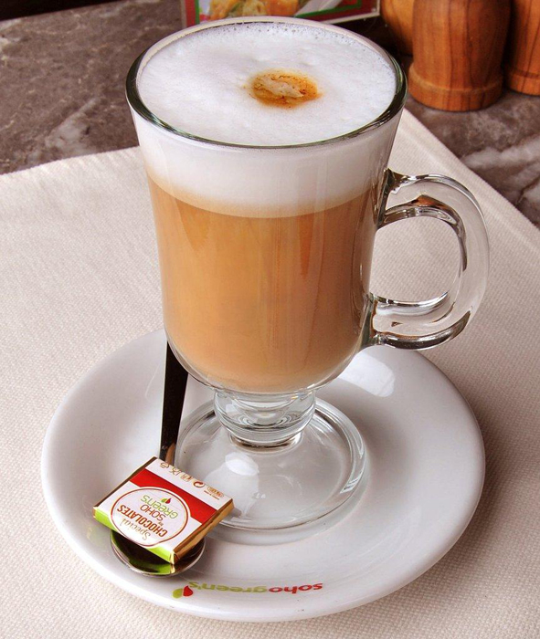
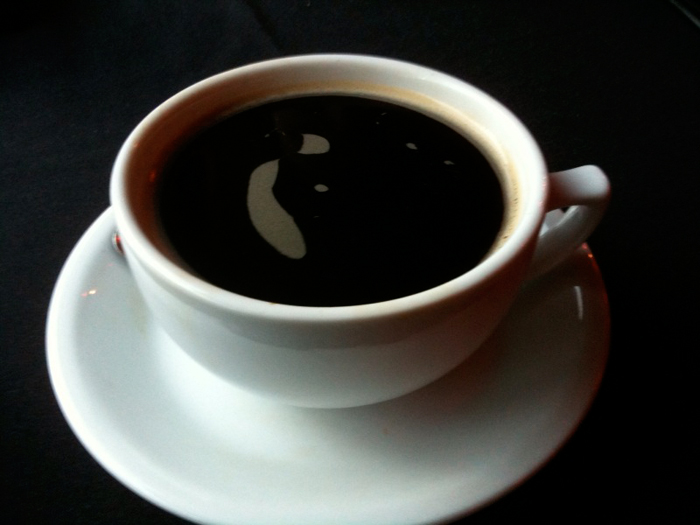

1. Cappuccino

A perfect balance of rich espresso, steamed milk,
and a thick layer of foam.
Smooth, bold, and creamy
— the classic choice for coffee lovers.
Price: 500 Taka
Available: Yes ✅
2. Mocha
A delightful fusion of bold espresso, rich chocolate
syrup, and creamy steamed milk.Topped with whipped cream
— perfect for those who love coffee with a chocolaty twist.
Price: 400 Taka
Available: Yes ✅
3. Expresso
A strong and rich shot of pure coffee — bold in flavor
and packed with energy. Served in a small cup, but with
a big impact. Perfect for a quick pick-me-up!
Price:450 Taka
Available: Yes ✅
4. Latte
A creamy and comforting blend of rich espresso and
steamed milk, topped with a light layer of foam.
Smooth and mellow — ideal for relaxing moments.
Price: 375 Taka
Available: Yes ✅
5. Americano
A smooth, bold coffee made by diluting rich espresso
with hot water.Perfect for those who enjoy the pure
essence of coffee with a lighter touch.
Price: 300 Taka
Available: Yes ✅